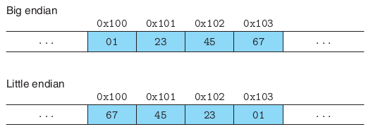

My Notes on Computer Systems A Programmer’s Perspective
INDEX
Toggle Sections
Open All Sections
Collapse All Sections
Link to the book's site.
- Stages of compiling a program. Four parts to a compiler:
preprocessor: process macros, add headers into program.
compiler: translate into Assembly Language. An intermediate
form, optimize the program, check for issues (produce warnings).
assembler: translate into machine code, produce a object file.
linker:link object files and libraries to produce a executable.
- Running a program. Shell reads the program's name, loads exec file into
RAM, executes it. Data copied from Disk into main memory without CPU
involvement = using DMA. Data loaded into caches on cache miss. Faster
access when memory access is spatially local.
- A hierarchy of memory: Registers, L1, L2, L3 caches, DRAM, Local Disk
(SSD, HDD), remote storage.
- OS manages the hardware, facilitates sharing among processes. System
calls to communicate with IO. Each system call is trapped by the HW,
registered kernel code begins running in kernel mode.
After necessary operation is complete, returns to user mode.
-
Process is OS abstraction for running a program. Threads are multiple
execution units within a process. Each process is provided an illusion of
access of the complete memory. Virtual address space of the program is
translated into the physical address space using OS page tables. Each
virtual address is translated into the physical address using hardware.
If a address is not found or is out of bounds, the hardware calls a
registered function to signal the error.
-
Concurrency and Parallelism:
Concurrency : Multiple simultaneous activity
Parallelism : Using concurrency to make the system faster.
-
Concurrent kernel threads. Concurrency in hardware: multiple processor
cores, multiple hardware threads per core (hyperthreading).
- Instruction level parallelism: pipeline instructions to execute
multiple different instructions in parallel. SIMD parallelism: the same
instruction is run on multiple data streams (e.g. adding blocks in
parallel)
-
Information stored in virtual memory. Word size is the nominal size of
integer and pointer data. w-bit word implies 2^w addresses are possible.
64bit word processors (amd64) are common.
- Each C type has a fixed size. e.g. char is 1 byte irrespective of word
size. Long int and pointer types are 1 word sized.
- Endianess: Order of storing bits in memory. Only for data spanning
multiple bytes. Little endian: in memory highest significant bit goes to
highest address. Big endian: highest significant bit goes to lowest
address. e.g.
0x12345678 is represented as:

Some architectures are bi-endian: can read either way.
-
INDEX